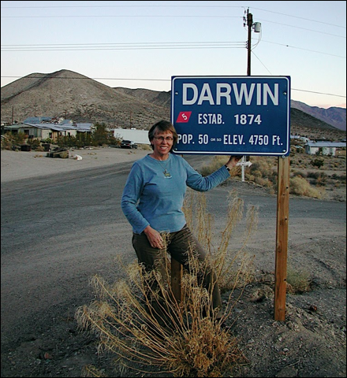

French Family Association
The Official Website of the Surname French

Mara French (not a descendant of this line) standing by the signpost of the town of Darwin, founded by Erasmus Darwin French ca. 1850 when he found silver (not gold) in this area). The town as of Nov 2009 has 23 inhabitants -- a real ghost town with many abandoned cars and shacks. The town is just outside Death Valley National Park and is exactly half way between Death Valley (-252 ft below sea level) and Mt. Whitney, which are the lowest and highest spots in the U.S.A.
Chart #114. Erasmus Darwin
French, 1822
Death Valley, California
This chart updated by Mara French on 2/9/11. Numbers in brackets [ ] show sources and refer to the bibliography at the end of this chart. An asterisk (*) shows continuation of that line. Send any corrections or additions to this chart to marafrench@mindspring.com. Revisions: 1989, 2011.
Contents
You are invited to view Mara's photo
album: Death Valley 11/29/09 9:36 AM
FFA Chart #114 from Jim C. French
History and Background
Erasmus Darwin French was b. 20 Jan 1822 in Middlesex, Yates, NY, and d. after 1906 in Ensenada, Mexico. He was the son of Harvey and Amanda (Hazeltine) French of Chester, Hampden Co., MA. He m. Cornelia Seymour Cowles on 12 Jan 1858 in San Jose, CA. She was b. 31 Oct 1829 in Belleville, St. Clair Co., IL. They had 5 children: Lulu Charlotte French, Lila French, Alfred Channing French, John French, and Addison Paine French. For more on this family, see Jim C. French’s website.
1. Ozias French, b. 1761, m. Elizabeth Dayton on 24 Aug 1786, d. 1809 and is buried in the French Cemetery in Rushville, Yates Co., New York.
2. Harvey French, b. 10 Dec 1788, m. Amanda Hazeltine.
3. Erasmus Darwin French, b. 20 Jan 1822 in New York.
4. Alfred C. French and Addison French.
Chuck French and ??? French in Darwin, CA, descendants
of FFA Chart #1 which is the larger portion of descendants of FFA Chart #114.
Doctor Erasmus Darwin French was a man of adventure. Born in New York, he was the oldest son of Harvey French and Amanda Hazelton French. In 1887 Dr. French was asked to provide his own eye-witness account of the final decisive battle for the future state of California in the Mexican American War of 1846.
Dr. French’s goal was to make his fortune in the world and he set out to do just that in December of 1845. His plans were interrupted by the war. After he was discharged in early 1847, he resumed his quest for adventure. He purchased a large ranch northeast of Los Angeles in the late 1840’s and opened a mining town in south central California. The residents of that town named the village after Dr. French -- they called it Darwin. Dr. French heard that there was a possible silver lode in the midst of Death Valley, and he lead an expedition into the Valley in 1850 and found no silver after two attempts.
The Dictation of the Battle of San Pasqual, Dec. 6, 1846
Dr. French was born in the State of N.Y. Jan. 20, 1822, where he remained until 1835, attending the common schools of the country. He then went with his father to Mich. where he attended the Albion Seminary. While in Hillsdale Co. he studied medicine and engaged in the practice for several years. Finally in 1845 Dr. French came to Ft. Leavenworth, Kan. where he enlisted in the army as Hospital Steward. . . . . . then started for Santa Fe, N.M. On their way they met Gen. Kearny about 40 miles from the Rio Grande near headwaters of Gila River. Near Santa Fe they met Kit Carson who informed them that the trouble in Calif. was over and that the Mexicans were perfectly peaceable. . . .After marches long and arduous, almost famishing at times for water and very frequently short of rations, they came to the hills and mountains overlooking the valley of San Pasqual. . . Gen. Kearny sent Lieu. Hammon over to view the Mex. camp, and on his return he reported only a small number of Mex. Private soldiers who were there reported from 300 to 400 mexicans present. Gen. Kearny would not believe the private’s report and consequently in the morning the officers ordered a charge on the Mexican camp. They found the Mex. on horseback ready to leave and seeing the American troops straggling along, the Mex. commander, Andros Picho, ordered his men to “Come on and let us kill the d-d thieves.” The American troops were cold and wet . . . In a very short time 20 of their men were killed and 24 wounded. . . . Kit Carson and one other man had secretly gotten through the Mexican lines, made their way to San Diego, secured the assistance of Commodore Stockton’s troops . . . the Mex. retreated. . . . After the closing struggles Dr. French went to San Jose where he married Miss Cornelia S. Cowles. . . . This happy event took place Jan. 12th 1858. They have two sons Alfred C. and Addison. Dr. French owns 160 acres of very fine land well improved in Poway Valley. He also owns 7 lots on Coronado Beach near Hotel Del Coronado, also two more lots near center of Beach [4].
This dictation is only a small part of a copy made from a microfilm copy of the original manuscript. The following paragraphs are further notes and a poem by Erasmus Darwin French from http://www.enotes.com/topic/Darwin_French and http://www.ireference.ca/search/Darwin%20French/.
Doctor Erasmus Darwin French was a man of adventure. He was the son of Harvey and Amanda Hazelton French. His father was a veteran of the War of 1812. The attached dictation was written in his hometown of Poway, California--a small town located north of San Diego. In 1887, Dr French was asked to provide his own eye witness account of the final decisive battle for the future state of California in the Mexican American-War of 1846. Dr French was a participant in that battle--the battle of San Pasqual. He had enlisted in the US Army at the start of the Mexican American War and entered the service as a private even though he was a practicing physician in civilian life.
The journey of General Kearny and his “Army of the West” (a small band of warriors) across the wilderness of southwestern United States has been the subject of many books and articles. Dr French shared in that journey and in the next three pages demonstrates his ability to capture a vivid account of the battle in which he fought. He also has given us a chance to share in the emotion of the event in his stirring poem about the battle of San Pasqual.
Dr French’s goal was to make his fortune in the world and he set out to do just that in December of 1845. His plans were interrupted by the war. After he was discharged in early 1847, he resumed his quest for adventure, he purchased a large ranch northeast of Los Angeles in the late 1840’s, assisted some lost settlers who had mistakenly wandered through California’s Death Valley, and opened a mining town in south central California. The residents of that town named the village after Dr. French-—they called it Darwin, California. The town is still in existence as of 2005. Dr French had heard that there was a possible silver lode if the midst of Death Valley. Despite the fact that this inferno had never been explored, Dr French lead an expedition into the Valley in 1850--they found no silver. Again in 1860, Darwin lead another party into Death Valley in a second attempt to find silver--again, no success. Nonetheless, the route he took is laid out for tourists to observe in the Death Valley National Monument. Two other landmarks are named after him--Darwin Falls and Darwin Wash.
The dictation that is to follow is a typewritten copy of a microfilm of the original dictation on file in the Bancroft Library at the University of California at Berkeley. The original dictation was done by hand--however, there is no way to determine whether or not it was written by Dr French or written by a clerk to whom he delivered the dictation. The typewritten copy is nearly an exact representation of the original manuscript including spelling and punctuation.
The Battle of San Pasqual, Dec. 6, 1846
Dictation from Poway, Calif. by Dr. E.D. French, July 7th, 1887
“Dr French was born in the State of N.Y. Jan. 20, 1822, where he remained until 1835, attending the common schools of the country. He then went with his father to Mich. where he attended the Albion Seminary. While in Hillsdale Co. he studied medicine and engaged in the practice for several years. Finally in 1843 Dr. French came to Ft. Leavenworth, Kan. where ho enlisted in the army as hospital Steward. On June 20th 1846 they started from Ft. Leavenworth with 5 companies for Calif. coming as far as Bent’s Ft. in Colo. Here they remained for a short time and then started for Santa Fe, N.M. On their way they met Gen. Kearny about 40 miles from the Rio Grande near headwaters of Gila diver. Near Santa Fe they met Kit Carson who informed them that the trouble in Calif. was over and that the Mexicans were perfectly peaceable. Carson had just returned from Calif. On learning this information 3 of the 5 companies were sent back to Leavenworth. The trip across the desert, plains and mountains was at times hazardous and even very dangerous. After marches long and arduous, almost famishing at times for water and very frequently short of rations, they came to the hills and mountains overlooking the valley of San Pasqual. Here they camped near the residence of Mr. Stokes whither many of the officers retired to drink wine and have a good time generally. Gen. Kearny sent Lieu. Hammond over to view the Mex. camp, and on his return he reported only a small number of Mex. Private soldiers who were there reported from 300 to 400 Mexicans present. Gen. Kearny would not believe the private’s report and consequently in the morning the officers ordered a charge on the Mexican camp. They found the Mex. on horseback ready to leave and seeing the American troops straggling along the Mex. commander, Andros Picho, ordered his men to “Come on and let us kill the d—d thieves.” The American troops were cold and wet; it having rained a little just before starting. Their mules were tired, their powder wet and their officers full of wine. The Mex. were on fresh horses, armed with spears and lancers, and they made a bold dash upon the Americans. In a very short time 20 of their men were killed and 24 wounded. The fight was a very severe one, Capt’s Moore and Johnson being both killed. During the hottest of the fight Capt Moore emptied his revolver, broke his sword and then drawing his revolver threw it with great force against the Mex, saying “There d—d you take that.” Although his men fought hard to save him he was soon pierced through with a Mex. lance and died immediately. The next evening after the battle one man, Sergeant Cox, passed over the river to his long home. The Americans now saw that they must fight and the Mexicans were soon driven back. They then started for San Diego, but the Mex. thinking to intercept them in a narrow defile at the head of San Bernardo valley hastened whither. Instead of going up there as anticipated by the Mex, the Americans, started down the valley toward San Diego. The Mex. then attempted to gain a hill near where the Americans were, but by the efforts of Carson they were prevented from doing so. The command at this time was with Capt. Turner, Gen. Kearny being wounded. The Americans gained the hill on which they were compelled to remain for 4 days. Kit Carson and one other man had secretly gotten through the Mexican lines, made their way to San Diego, secured the assistance of Commodore Stockton’s troops at that time stationed at San Diego. During the four days incarceration on the hill the Americans had nothing but mule meat to eat, and at one time the Mex. nearly secured their mules. As soon as Stockton’s men arrived the Mex. retreated and Kearny moved on to San Diego. The band met them a short distance from the fort and played some very familiar and to them delightful music. On arriving in San Diego they were compelled to send ship to Sandwich Islands for provisions. Remaining here for some time for men to recruit, they then went to Los Angeles. Here the Mexicans soon made a compromise with Gen. Fremont.”
“After the closing struggles Dr. French went to San Jose where he married Miss Cornelia S. Cowles, daughter of Judge Cowles of San Diego. This happy event took place Jan. 12th, 1858. They have two sons Alfred C. and Addison.”
“Dr. French was one of Board of Supervisors when the court house was built, and in removing the records from Old Town to San Diego much trouble was experienced. The parties on the board at first were Dr. French, C.W. B. McDona1d and J. W. Riley. In some way the Old Town men secured the appointment of two additional supervisors in hopes of securing the Democratic member, Mr. Riley, in favor of holding the records at Old Town. Dr. French was chairman and when the vote was taken two members voted that they should not be removed. Dr. French voted to remove and it was done. The debate became very warm and it is said that revolvers were drawn and would have been used on very slight provocation.”
“Dr. French owns 160 acres of very fine land well improved in Poway Valley. He also owns 7 lots on Coronado Beach near Hotel. Def Coronado, also two more lots near center of Beach. Expects to move to San Diego soon.”
Poem
"The Battle of San Pasgual." Written by Dr. E. D. French. circa 1847.
Twenty new graves must be made today; Twenty cold bodies to be laid away. Or bury them down in one single bed; In one single tomb let them rest with the dead. At the lone midnight hour they were carried along, No salute could be fired — no funeral song; For our battle had been in the land of the foe, And now in dark silence to the tomb they must go: We kindred were there to embalm with a tear, The last dying moments to friendship so dear; Nor even to weep on that desolate night; As their loved ones were buried forever from sight. Long had we marched through the heat and the rain; Crossed the great rivers that swept through the plain; Encountered the mountains that stood in our way, And passed through the forest without fear or delay. We came to the border - the Mexican land; To mountains of granite, and rivers of sand, Marched through deep passes and narrow defiles, ‘Till we came to the valley of sun light and smiles,- Here our flag we raised high for the breezes were free, As we came to the city of Santa Fe. Now echo of cannon pealed loud through the air,, The American troops in full conquest were there: And we marched through the streets of that time honored place, And seized the domain of the Mexican race. Nor yet was our halting, for onward we pressed; To reach the Pacific; the shore of the west:- The great rocky mountains we passed in our glee, Intent to embrace the white waves of the Sea. California was reached, and her vales of renown, Were spread in their beauty like gems in a crown. The journey to us was like a parade Or some pleasure seeking, holiday made. But here just at dawn when all nature was still, The foe we attacked at the base of the hill, And e’re in our triumph the conquest could gain; In the tide of the fight our companions were slain. So down in the willows beneath the dark cloud, Which rolled in the sky like a burial shroud; We laid the brave men that so suddenly died; E’re they marched o’er the land they had barely espied. Then peaceful their sleep in the lone grave shall be, They shall feel no more wounds - no more battle shall see. No foe with their chargers and lances draw nigh — No grief e’re their zephyr’ soft sigh. Farewell; we have left thee; companions in arms; Our lives may be joyful, or filled with alarms - Whatever our joy or sorrow may be, We’ll remember the graves by the one willow tree.
Darwin Falls
Darwin Falls is a waterfall
located western edge of Death Valley National Park near the settlement of Panamint Springs, California. Although there exists a
similarly named Darwin Falls Wilderness adjacent to the falls, the falls
themselves are located in and administered by Death Valley National Park and the
National Park Service. There are several falls, but they
are mainly divided into the upper and lower with a small grotto in
between. At a combined 80 feet (24 m), it is the highest waterfall in the
park. The canyon is walled by dramatic plutonic rock.
Darwin Creek is one of the four perennial streams in three million
acre (12,000 km²) Death Valley National Park. Darwin Falls and Creek are
fed by the Darwin Wash, which is in turn fed by the volcanic tableland of the
Darwin Bench between the Inyo Mountains and the Argus Range.
The small, narrow valley where the creek and falls are located features a rare
collection of riparian greenery in the vast desert and is
home to indigenous fauna such as quail. The falls themselves support several small fern gullys.
Bibliography
[1] FFA Member Thelma Valdez has gathered quite a bit of data on this line, mostly from the vital records of Chester, MA. Related names include Johnson, Kinsman, Lindsley, Beers, Twitchell, Chase, Chapman, Page, and Hillier.
[2] FFA Member Wanda McBride writes “while on vacation in Death Valley, California, about fifty miles into the desert and near the summit of the Argus Range, we saw a historical monument and read that it was a tribute to the town of Darwin, founded by Dr. Darwin French.” She goes on to say “Dr. Darwin French organized and led the first prospecting party into Death Valley in 1860. Not only is there an inhabited town named for Dr. French, but also Darwin Falls, Darwin Canyon, and Darwin Wash. Unfortunately the monument had been defaced and we were unable to read the list of minerals and metals and the amounts of each produced from Darwin mines.”
[3] Gerald Tonnell. 3979 Marie Cook Dr., Montgomery, AL 36109. 205-277-2964. Gerald wrote an introduction to a dictation that Dr. E. Darwin French delivered in 1887 concerning his part as a hospital (medical) orderly in the Battle of San Pasqual (1846) in the Mexican-American War of 1846/47.
TONNELL, Gerald H., #170. Family names: HAZELTON, EARL. Connection: Chart #1: Thomas French (1); Thomas French Jr. (2), b. 1608 in Assington, Suffolk, England; John French (3), b. 1622, m. Freedom Kingsley; John French (4), b. 28 Feb 1654/55, m. Hannah Palmer; Samuel French (5); Samuel French (6), b. 30 Mar 1690; Ozias French (7); Harvey French (8); Candace Amanda French (9), m. Earl; Lexia Earl (10), m. Hall; Lois Amanda Hall (11), m. Tonnell; Herbert M. Tonnell (12); Gerald H. Tonnell (13). Query: Harvey French, b. 10 Dec 1788 in Franklin Co. MA, d. 15 Aug 1877 in Washtenaw Co. MI. Harvey lived in Middlesex, Yates Co, NY, until 1835. He moved to London, Monroe Co, MI in 1835 and stayed there until 1873. He remained in the neighboring county of Washtenaw, MI until his death in 1877. Harvey’s dau. Candace Amanda French was b. in Yates Co. NY. His son was Erasmus Darwin French, b. ca. 1822 who was the first principal explorer of Death Valley, CA. His final home was in San Pasqual, San Diego Co., CA. He participated in the Battle of San Pasqual, Dec 1846. He even lived in San Jose, CA between 1850-1858.
[4] F487 DARWIN FRENCH. Introduction to the Dr. E. Darwin French Dictation, contributed and written by Gerald H. Tonnell. Includes the Dictation from Dr. E. D. French, Poway, Calif., 7 Jul 1887. Dr. Erasmus Darwin French was asked to provide his own eye witness account of the final decisive battle for the future state of California in the Mexican American War of 1846- The Battle of San Pasqual. 4 pages. Harvey and Ozias French (Chart #114).
[5] Jim Conant French email: selago@gmail.com. Website: http://wc.rootsweb.ancestry.com/cgi-bin/igm.cgi?op=GET&db=jacob11&id=I16119
[6] Other websites:
http://en.wikipedia.org/wiki/Darwin_French
http://mojavedesert.net/historical-figures/darwin-french.html
http://digital-desert.com/darwin/ (also see slideshow)
http://www.ghosttowns.com/states/ca/darwin.html (see more photos)
http://freepages.history.rootsweb.ancestry.com/~gtusa/usa/ca/darwin.htm
http://www.sanpasqual.org/account-5-aftermath.html